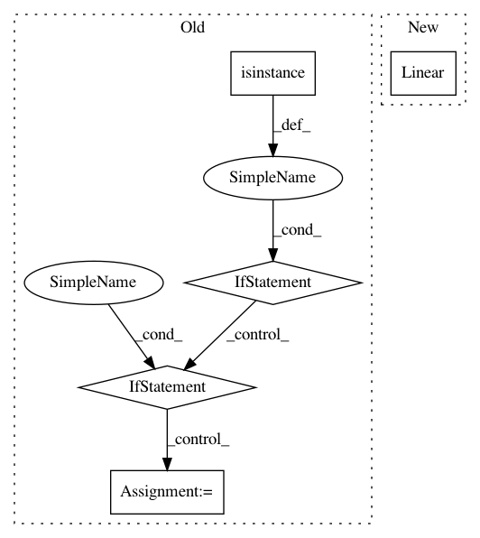

82a059d89d5f5ebc77c6a3f0b8ac4072a3979104,tensorforce/core/networks/layer.py,Conv2d,__init__,#Conv2d#Any#Any#Any#Any#Any#Any#Any#Any#Any#Any#,936
Before Change
l1_regularization: L1 regularization weight
self.size = size
if isinstance(window, int):
self.window = (window, window)
elif len(window) == 2:
self.window = tuple(window)
else:
raise TensorForceError("Invalid window {} for conv2d layer, must be of size 2".format(window))
self.stride = stride
self.padding = padding
self.bias = bias
self.l2_regularization = l2_regularization
After Change
summary_labels=summary_labels
)
if self.skip:
self.linear_skip = Linear(
size=size,
bias=bias,
l2_regularization=l2_regularization,
l1_regularization=l1_regularization,
summary_labels=summary_labels
)
// TODO: Consider creating two nonlinearity variables when skip is used and learning beta
// Right now, only a single beta can be learned
self.nonlinearity = Nonlinearity(summary_labels=summary_labels, **util.prepare_kwargs(activation))
super(Dense, self).__init__(named_tensors=named_tensors, scope=scope, summary_labels=summary_labels)
In pattern: SUPERPATTERN
Frequency: 3
Non-data size: 5
Instances
Project Name: reinforceio/tensorforce
Commit Name: 82a059d89d5f5ebc77c6a3f0b8ac4072a3979104
Time: 2018-08-03
Author: alexkuhnle@t-online.de
File Name: tensorforce/core/networks/layer.py
Class Name: Conv2d
Method Name: __init__
Project Name: chainer/chainerrl
Commit Name: 71ee5a5d044a3ad12c28828f80160be182c61702
Time: 2019-04-28
Author: muupan@gmail.com
File Name: examples/mujoco/trpo/train_trpo.py
Class Name:
Method Name: main
Project Name: allenai/allennlp
Commit Name: 700abc65fd2172a2c6809dd9b72cf50fc2407772
Time: 2020-02-03
Author: mattg@allenai.org
File Name: allennlp/models/encoder_decoders/composed_seq2seq.py
Class Name: ComposedSeq2Seq
Method Name: __init__